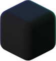
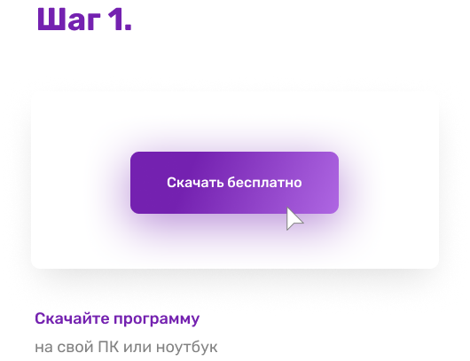
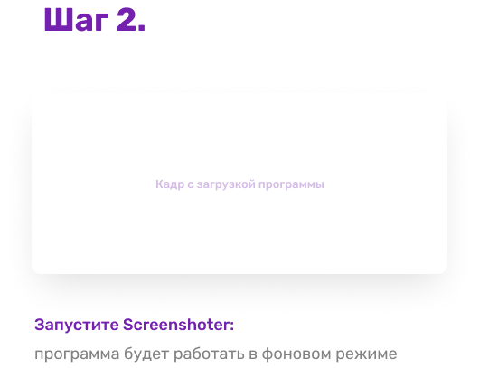
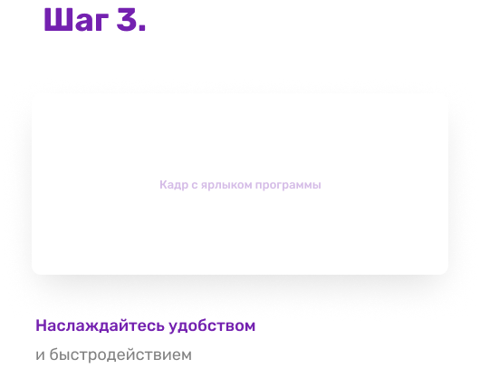

Функции
Преимущества
Как использовать
Частые вопросы
Функции
Преимущества
Как использовать
Частые вопросы
Вместе со Screenshoter можно в один клик сделать снимок или записать происходящее на экране ПК, чтобы поделиться с кем угодно

Больше не нужно искать две отдельные программы для скриншотов и записи экрана. Screenshoter поможет сделать снимок экрана, записать видео и поделиться им с кем угодно. Можно выделить весь экран, определенную область или активное окно

Снимок и запись экрана в 1 клик
Моментальная ссылка на файл
Удобный редактор снимков

Бесплатно и без регистрации

Недостаточно снимков? Запишите происходящее на экране со своим голосом или звуком системы.
Достаточно нажать две кнопки мыши, выделить необходимую область и начнется запись видео
с экрана. Быстро и без сложных настроек
Недостаточно снимков? Запишите происходящее на экране со своим голосом или звуком системы.
Достаточно нажать две кнопки мыши, выделить необходимую область и начнется запись видео
с экрана. Быстро и без сложных настроек
Мгновенное получение ссылки на снимок или видео. Вы только нажали Enter, а ссылка уже в буфере обмена. Перейдя по ссылке, можно будет посмотреть ваш снимок или записанное видео
Более 5 инструментов для редактирования. Выделяете область и редактируете.
Если неверно выбрали область — не беда, можно без проблем её передвинуть и/или изменить размер,
не удаляя то, что уже нарисовано!

Выбирайте цвет и рисуйте карандашом

Используйте стрелку, круг или квадрат для выделения

Используйте стрелку, круг или квадрат для выделения

Оставляйте комментарии
Когда нужно что-то наглядно показать коллеге, исполнителю или заказчику — можно сделать снимок экрана и добавить к нему комментарий. А если ситуация требует более детального объяснения — окей, не проблема. Screenshoter поможет записать видео экрана вместе с вашими голосовыми комментариями

Нужно что-то наглядно объяснить? Создавайте удобные, пошаговые инструкции, добавляя комментарии и визуальные отметки в необходимом месте скриншота. Поделиться снимком или видеозаписью можно с помощью ссылки, которая мгновенно появляется в буфере обмена

Если в процессе работы приложения, сайта или сервиса возникла ошибка, её можно моментально зафиксировать. Отправьте скриншот в техподдержку, где будет видно, в чем именно заключается проблема



Больше не нужно искать две отдельные программы для скриншотов и записи экрана. Screenshoter поможет сделать снимок экрана, записать видео и поделиться им с кем угодно. Можно выделить весь экран, определенную область или активное окно
Снимок и запись экрана в 1 клик
Моментальная ссылка на файл
Удобный редактор снимков
Бесплатно и без регистрации